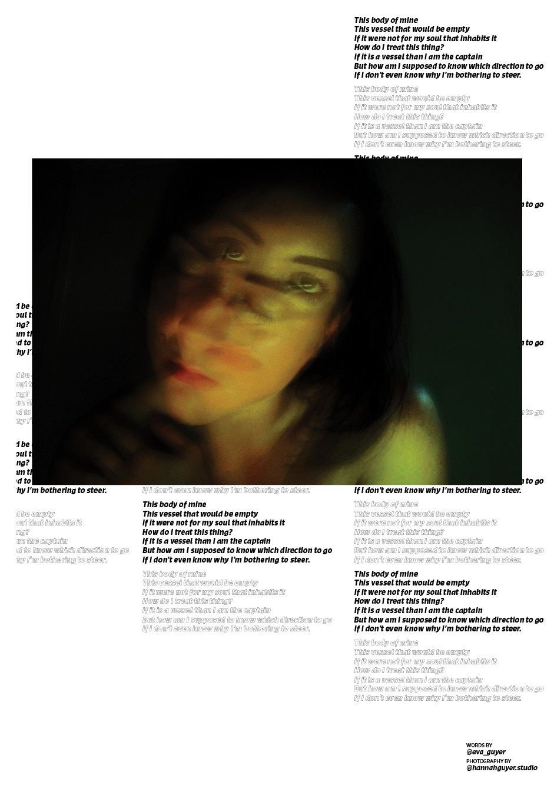
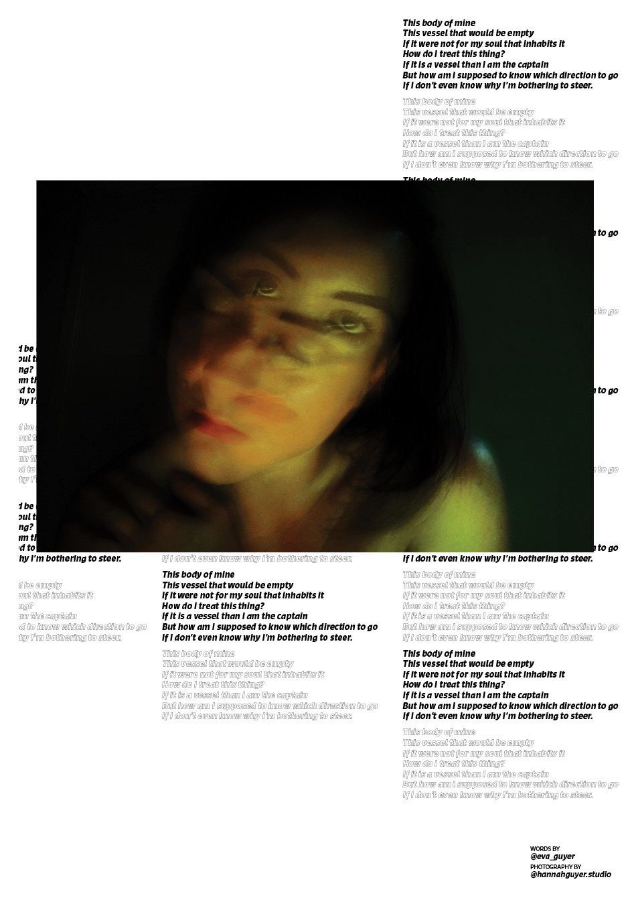
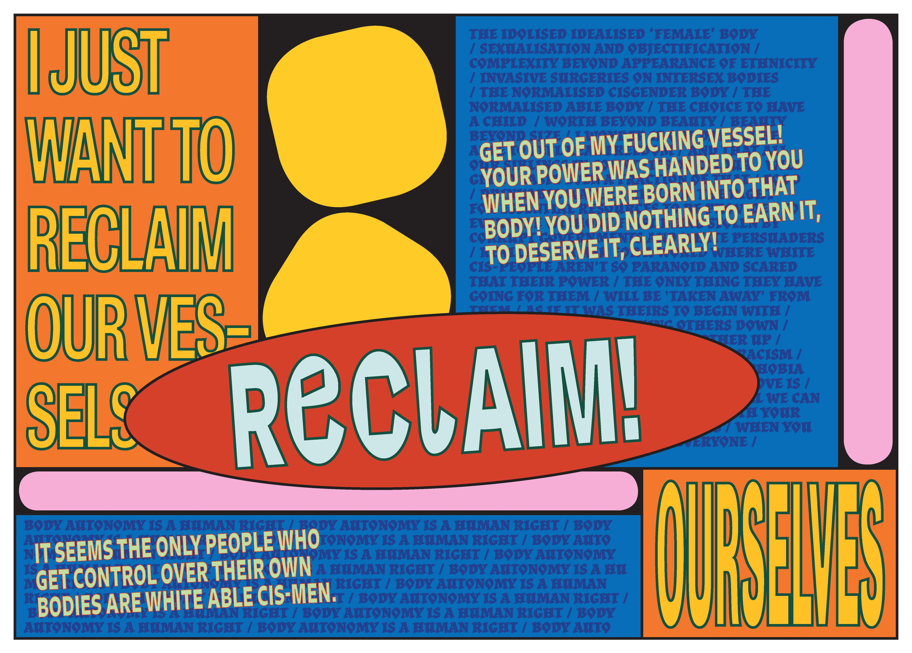
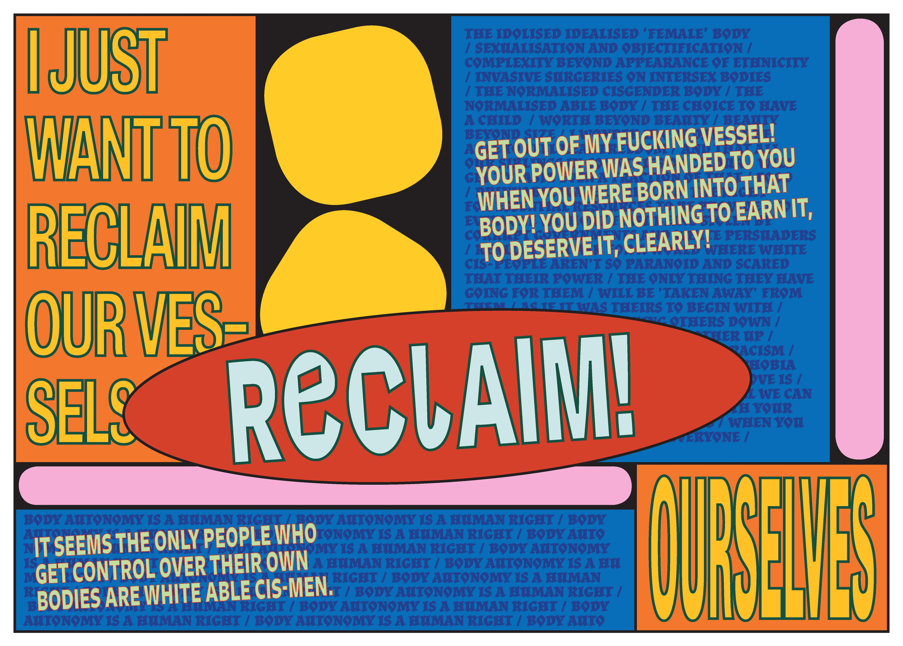

(Club Scene) MAGAZINE is a freeform "magazine" with a new theme each issue, of which there are currently one (1).

 

 
Images © Rochelle Oh and Joëlle Thomas 2019

Images © Rochelle Oh and Joëlle Thomas 2019
ISSUE 001 • Vessel
"VESSEL is a strange word that we never used or noticed before starting this project, although of course we now notice it everywhere. It’s a word that seems so distant from our everyday vocabulary, yet once you take note of it’s existence, it seems so fitting in every context. VESSEL is both extremely vague and extremely specific. It has one fairly universal meaning – something that holds or contains in order to store and/or transport – but this meaning seems to have been thrust upon everything from the tangible to metaphysical, literal to metaphorical."In this broadsheet newspaper, we explore the possibilities of the word/concept/void/tunnel/ship/vein/vase/alt-rock-pop-hip-hop album that is VESSEL.
Design & direction by Rochelle Oh and Joëlle Thomas.
Featuring illustrations, photography, writing and more from Ameya Ajay, Naverre Fenwick, Eva Guyer, Hannah Guyer, Nick Manton, Angharad Neal-Williams, Gabby Parish, Mollie Reeve, Alex Rothmeier, Sara Schacher, Hayley Sinnatt, Griea Taylor, Kea Tokley-Higgs, and you.